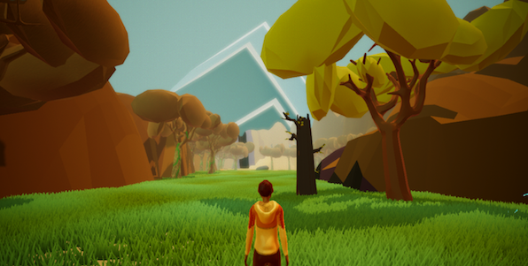

PROJECTS
Title: Juanito el Nahualito
Roles: Lead Sound Designer/Engineer and Tech Artist
Collaborators: Team Nahual
Description: Juanito el Nahualito uses magical realism to depict a modern day mesoamerica to tell a story about a boy that goes on a journey in search of his sick grandfather. The stories of his heritage and culture that his grandfather would tell Juanito growing up are the key to finding him.
Title: Recollection of the Surrealist (Re Co Surreal)

Role: Sound Designer
Collaborator: Jude Loren
Description: Recollection of the Surrealist is a short experimental art game about traversing through a disordered mind.
Title: Just a Guy with a Beard

Role: Writer and Object Interactions
Collaborator: Hesi Mendez
Description: Just a Guy with a Beard is an interactive narrative about a guy with a beard. You learn an extensive history about the character as you explore their apartment and learn about the tragedies that have happened to him.
SOLO PROJECTS
Title: Piscando Para Ustedes

Description: Piscando Para Ustedes is an interactive-installation-simulation experience of working as a farmworker. The installation puts the player in the shoes of a farmworker, they must "harvest" all the "strawberries" they can find while they deal with the inability to stand up and be exposed to intense heat from the heater. The experience simulates 2-5 minutes of the daily life of a farmworker. The materials for the installation are two adjustable whiteboards, artificial vines, red poker chips, and a heater fan that is not shown in the picture above.